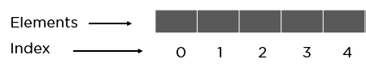
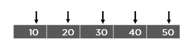
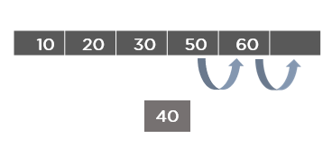
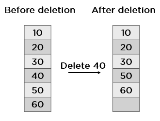

Introduction to Arrays
An array is a data structure consisting of a collection of elements, each identified by at least one array index or key. It is used to store multiple values in a single variable. Arrays in data structures help solve some high-level problems like the "longest consecutive subsequence" program or some easy tasks like arranging the same things in ascending order. The concept is to collect many objects of the same kind.
What Are Arrays in Data Structures?

In the context of Data Structures and Algorithms (DSA), an array is a fundamental data structure that stores a collection of elements of the same type in contiguous memory locations. Each element in the array is accessed by its index or position.
- Fixed Size: Arrays have a fixed size, meaning the number of elements they can hold is determined when they are created. This size cannot be changed dynamically during runtime.
- Contiguous Memory Allocation: Array elements are stored in contiguous memory locations, which means the elements are stored one after the other in memory. This property allows for efficient memory access, as elements can be accessed directly using their indices.
- Indexing: Elements in an array are accessed using their index. The index is typically a non-negative integer that represents the position of the element within the array. The index of the first element is usually 0, and the index of the last element is one less than the size of the array.
- Random Access: Arrays support random access to elements, which means any element can be accessed directly by its index in constant time (O(1) time complexity).
- Homogeneous Elements: Arrays can only store elements of the same data type. For example, an array of integers can only hold integer values, and an array of characters can only hold characters.
- Static vs. Dynamic Arrays: Some programming languages support dynamic arrays, which can resize themselves dynamically to accommodate more elements if needed. Dynamic arrays typically use a resizing strategy (e.g., doubling the size when full) to efficiently manage memory.
- Applications: Arrays are widely used in various algorithms and applications, including sorting algorithms (e.g., insertion sort, merge sort), searching algorithms (e.g., binary search), dynamic programming, representing matrices, and more.
Why Do You Need an Array in Data Structures?
Arrays are an essential data structure in computer science and are widely used for several reasons:
- Efficient Access: Arrays provide constant-time access to elements based on their indices. This means that accessing any element in the array requires only a single operation, regardless of the size of the array. This efficiency makes arrays suitable for applications where fast access to elements is crucial.
- Memory Efficiency: Arrays use contiguous memory allocation, meaning that elements are stored one after the other in memory. This memory layout is efficient in terms of space, as it minimizes overhead and allows for efficient memory access patterns. Additionally, arrays have a fixed size, which can lead to better memory management compared to dynamic data structures.
- Sequential Storage: Arrays are ideal for storing elements that have a sequential or linear relationship. For example, arrays are commonly used to represent sequences of data such as lists, queues, and stacks. The sequential storage provided by arrays makes it easy to traverse elements sequentially or perform operations on them iteratively.
- Index-Based Access: Arrays allow for direct access to elements using their indices. This index-based access enables efficient random access to elements, which is crucial for many algorithms and applications. For example, arrays are often used in sorting and searching algorithms that require random access to elements.
- Versatility: Arrays can store elements of the same data type, but they can also be used to represent more complex data structures by storing references or pointers to other data structures. This versatility allows arrays to be used in a wide range of applications, from simple lists to more complex data structures like graphs and trees.
- Efficient Iteration: Arrays facilitate efficient iteration over elements, as they provide direct access to each element based on its index. This property makes it easy to traverse the entire array or perform operations on all elements in the array without the need for additional data structures or overhead.
Benefits of Using Arrays
- Arrays allow for efficient storage and retrieval of multiple values.
- They provide a convenient way to organize related data.
- Arrays facilitate iteration over elements, making it easier to perform operations on collections of data.
- They are widely supported in various programming languages.
Examples of Arrays
Below are some examples of arrays in different programming languages:
// JavaScript
var numbers = [1, 2, 3, 4, 5];
// Python
fruits = ["apple", "banana", "cherry"]
// Java
int[] myArray = {10, 20, 30, 40, 50};What Are the Types of Arrays?
There are majorly two types of arrays:
One-Dimensional Arrays
You can imagine a 1D array as a row, where elements are stored one after another.
Multi-Dimensional Arrays
Two-Dimensional Arrays

You can imagine it like a table where each cell contains elements.
Three-Dimensional Arrays

You can imagine it like a cuboid made up of smaller cuboids where each cuboid can contain an element.
What Operations Can You Perform on an Array?
Traversal
Traversal in an array is a process of visiting each element once.
// Sample code for traversal
#include<stdio.h>
int main() {
int a[5] = {2, 3, 5, 7, 11};
for(int i=0; i<5; i++) {
printf("%d\n", a[i]);
}
return 0;
}Insertion
Insertion in an array is the process of including one or more elements in an array.
At the Beginning
// Sample code for insertion at the beginning
#include<stdio.h>
int main() {
int array[10], n, i, item;
printf("Enter the size of array: ");
scanf("%d", &n);
printf("\nEnter Elements in array: ");
for(i=0; i1; i--) {
array[i-1] = array[i-2];
}
array[0] = item;
printf("Resultant array elements: ");
for(i=0; i 
At the End:
Code:
#include<stdio.h>
#include<conio.h>
int main()
{
int array[10], i, values;
printf("Enter 5 Array Elements: ");
for(i=0; i<5; i++)
scanf("%d", &array[i]);
printf("\nEnter Element to Insert: ");
scanf("%d", &values);
array[i] = values;
printf("\nThe New Array is:\n");
for(i=0; i<6; i++)
printf("%d ", array[i]);
getch();
return 0;
}At a Specific Position:
code:
#include<stdio.h>
int main()
{
int array[100], pos, size, val;
printf("Enter size of the array:");
scanf("%d", &size);
printf("\nEnter %d elements\n", size);
for (int i = 0; i < size; i++)
scanf("%d", &array[i]);
printf("Enter the insertion location\n");
scanf("%d", &pos);
printf("Enter the value to insert\n");
scanf("%d", &val);
for (int i = size - 1; i >= pos - 1; i--)
array[i+1] = array[i];
array[pos-1] = val;
printf("Resultant array is\n");
for (int i = 0; i <= size; i++)
printf("%d\n", array[i]);
return 0;
}Deletion
Deletion of an element is the process of removing the desired element and re-organizing it.
You can also do deletion in different ways:
At the Beginning
// Sample code for deletion at the beginning
#include<stdio.h>
int main() {
int n,array[10];
printf("Enter the size of an array: ");
scanf("%d", &n);
printf("Enter elements in an array: ");
for(int i=0; iAt the End
// Sample code for deletion at the end
#include<stdio.h>
int main() {
int n,array[10];
printf("Enter the size of an array: ");
scanf("%d", &n);
printf("Enter elements in an array: ");
for(int i=0; i